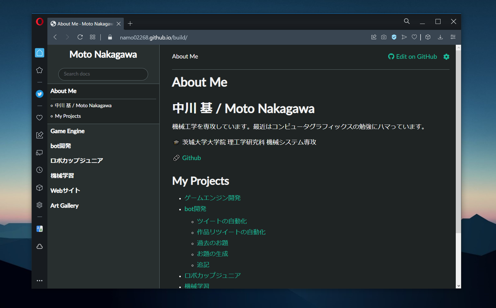
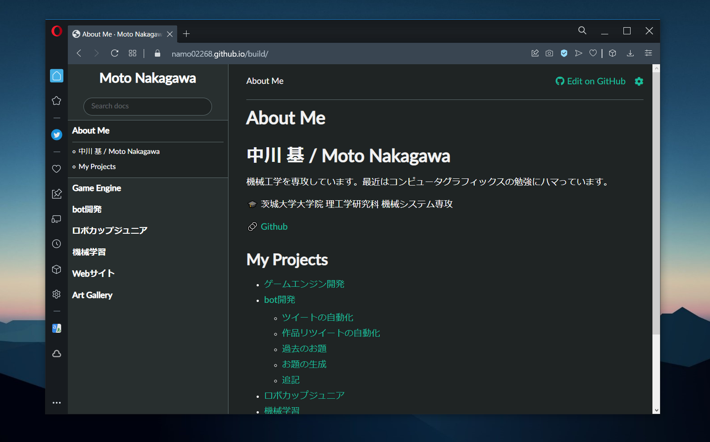

Webサイト作成
本Webサイトは Julia のパッケージ Documenter.jl を使って作成しています。Documenter.jl とは、Julia 用のドキュメント生成ツールです。Markdown ファイルから本サイトのような HTMLベースのページを生成してくれます。$\LaTeX$の表現形式にも対応しているため、簡単に数式混じりの文章を作成することができます。
本Webサイトは Julia のパッケージ Documenter.jl を使って作成しています。Documenter.jl とは、Julia 用のドキュメント生成ツールです。Markdown ファイルから本サイトのような HTMLベースのページを生成してくれます。$\LaTeX$の表現形式にも対応しているため、簡単に数式混じりの文章を作成することができます。
Settings
This document was generated with Documenter.jl version 0.27.15 on Friday 18 March 2022. Using Julia version 1.7.2.